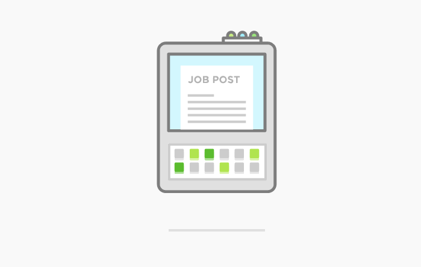
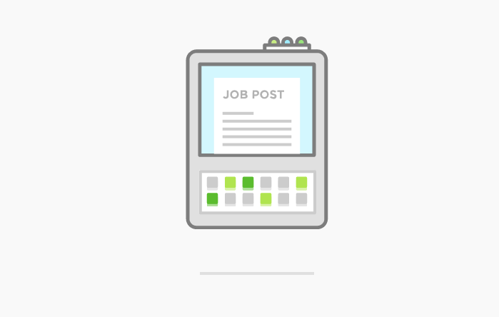
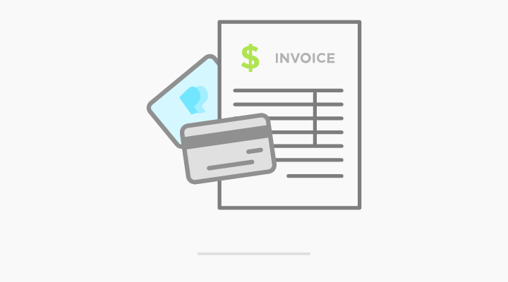
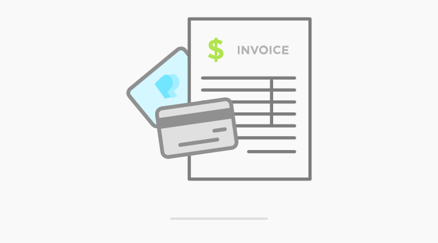

FIND

FIND
Many companies and recruiters use them to find the right candidate. Define the top job boards for your skill set and put your resume there. Choose a catchy, succinct headline that encourages the reader to open the attachment. Many show when your resume was last updated. To avoid getting shifted deeper into the pile of applicants, update it weekly.

In the study, researchers rewrote 56 job ads to emphasize two different approaches: the "Needs-Supplies" approach, which focuses on what the company can do for the candidate, and the "Demands-Abilities" approach, which focuses on what the company expects from the candidate. Of the 991 responses, applicants who responded to "Needs-Supplies" job listings were rated higher than those who responded to the "Demands-Abilities" ads.
Moreover, the United States may have created an average of 227,000 jobs per month in 2014, but the quality of the jobs has been quite low. More people are getting hired, but they’re ending up in jobs with few hours and low wages. More jobs mean nothing when they don’t lead to fatter paychecks. All of this is terrible for the economy in the long-run, in the sense that it undermines competitiveness, productivity and levels of social inclusiveness. In other words, low quality jobs are pushing people to the fringes of society. When it comes to unemployment, quality over quantity should be the guiding rule. Not surprisingly, despite the fact unemployment is down, most Americans are still dissatisfied with the economy.
HIRE
 WORK
WORK
 
PAYMENT

PAYMENT
On getJobs.com, employers and freelancers can easily tap and join the global workforce from anywhere. It is, therefore, a step forward to have a verified payment method on your account. For employers, this encourages prospective freelancers to complete projects in no time at all because they will be assured that their employers are willing to pay for the work to be done. Freelancers, on the other hand, will find this useful when paying for fees incurred on the site. Verifying your payment method sets up the billing agreement, which takes care of all your Freelancer.com fees and payments. Simply put, you no longer have to trouble yourself with money matters as funds will automatically be taken from your verified payment method to cover any fees or payments if you have no available or insufficient balance on your account.